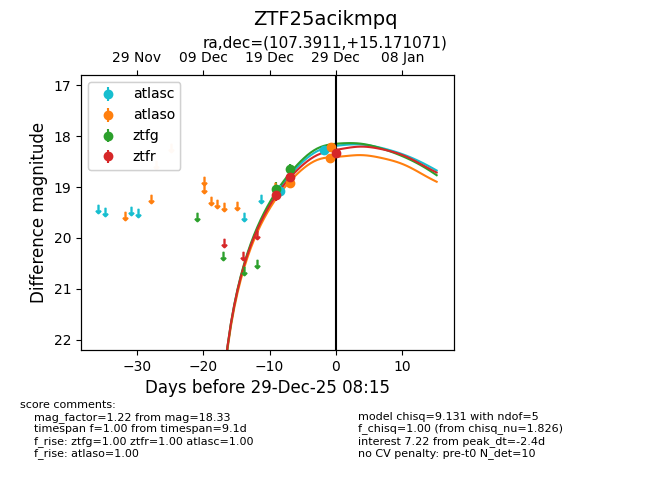
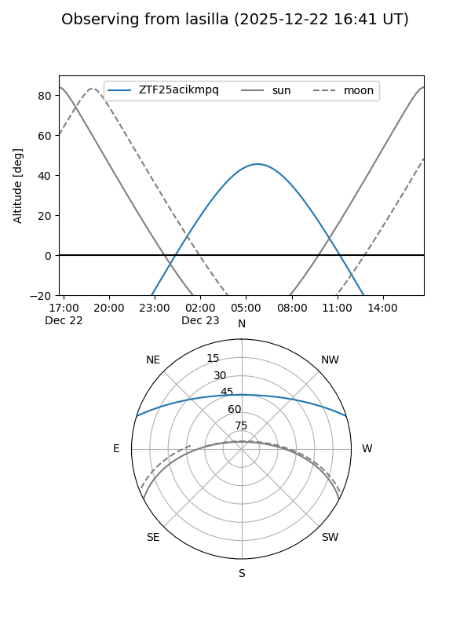
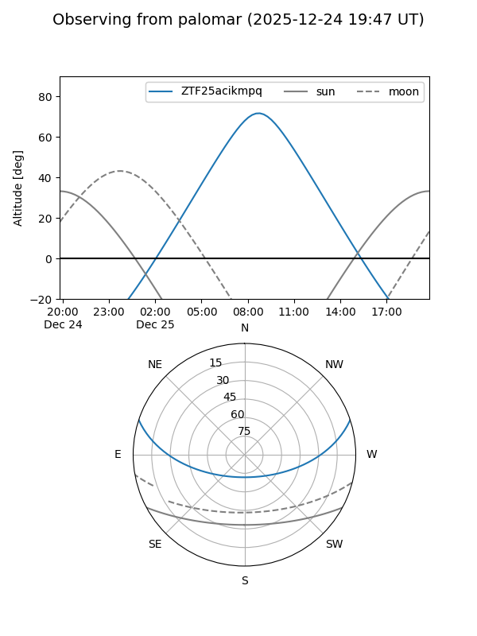
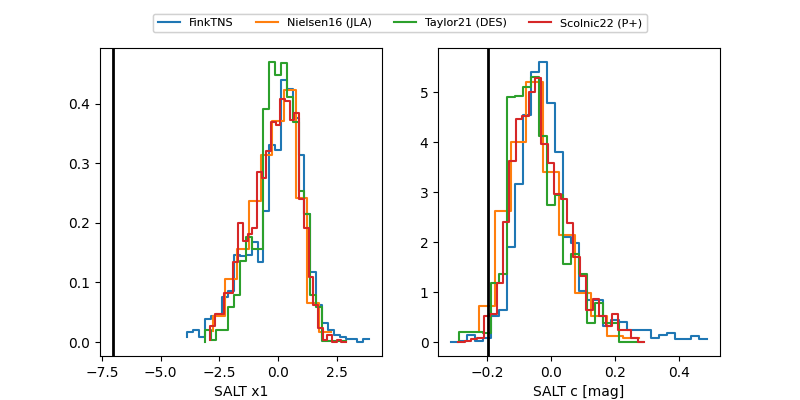

ZTF25acikmpq
Target ZTF25acikmpq at 2025-12-24 18:20
Aliases and brokers:
FINK: fink-portal.org/ZTF25acikmpq
Lasair: lasair-ztf.lsst.ac.uk/objects/ZTF25acikmpq
ALeRCE: alerce.online/object/ZTF25acikmpq
alt names
ZTF25acikmpq (ztf,fink_ztf)
Coordinates:
equatorial (ra, dec) = 107.3911,+15.17107
equatorial (HMS+DMS) = 07:09:33.87,+15:10:15.86
galactic (l, b) = (201.2952,+10.78935)
Flags:
Photometry:
last atlasc=19.08, atlaso=18.92, ztfg=18.64, ztfr=18.79
1 atlasc, 1 atlaso, 2 ztfg, 2 ztfr detections
Lightcurve

Visibility


Additional plots
